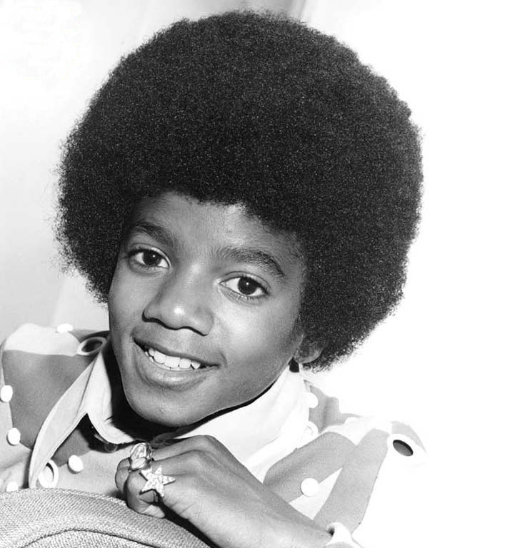

Biografia de Michael Jackson
Michael Joseph Jackson nació el 29 de agosto de 1958. Era el octavo de los diez hijos de la familia Jackson, una familia afroamericana de clase trabajadora que vivía en una casa de dos dormitorios en Jackson Street, en Gary, Indiana, una ciudad industrial en el área metropolitana de Chicago. Su madre, Katherine Esther Scruse, era una devota testigo de Jehová.
Ella tocaba clarinete y piano y una vez aspiró a ser una artista country & western, pero trabajó a tiempo parcial en Sears para apoyar a la familia. El padre de Michael, Joseph Walter “Joe” Jackson, un ex boxeador, era un trabajador del acero en U.S. Steel. Joe actuaba como guitarrista en una banda local de rhythm and blues, los Falcons, para complementar los ingresos de la familia. Michael creció con tres hermanas (Rebbie, La Toya y Janet) y cinco hermanos (Jackie, Tito, Jermaine, Marlon y Randy). Un sexto hermano, el gemelo de Marlon, Brandon, murió poco después del nacimiento.
Jackson tenía una relación problemática con su padre.2829 En 2003, Joe reconoció que él regularmente lo azotaba siendo niño.30 También se dijo que Joe había abusado verbalmente de su hijo, a menudo diciendo que tenía una “nariz gorda”.31 Jackson declaró que en su niñez fue abusado física y emocionalmente durante los ensayos incesantes, aunque acreditó que la disciplina terminante de su padre jugó un papel importante en su éxito
En una entrevista con Martin Bashir para el documental de 2003 Living with Michael Jackson, Jackson recordó que Joe a menudo se sentaba en una silla con un cinturón en la mano mientras él y sus hermanos ensayaban, y que «si no lo hacías de la manera correcta, te daba una paliza, realmente te azotaba»
En 1965, Michael comenzó a compartir la voz principal con su hermano mayor Jermaine, y el nombre del grupo fue cambiado a los Jackson 5. Al año siguiente, el grupo ganó un importante show de talentos locales con Jackson interpretando el baile del éxito de 1965 de Robert Parker “Barefootin'”. De 1966 a 1968 realizaron una gira por el Medio Oeste, actuando frecuentemente en una cadena de clubes negros conocidos como el “chitlin' circuit” como teloneros de artistas como Sam & Dave, the O'Jays, Gladys Knight y Etta James. Los Jackson 5 también actuaban en clubes nocturnos y salas de fiesta, donde espectáculos de striptease y otros actos de adultos se realizaban, y en auditorios locales y bailes de la escuela secundaria. En agosto de 1967, mientras viajaban por la costa Este, el grupo ganó un concierto semanal de noche para amateurs en el Teatro Apollo en Harlem.